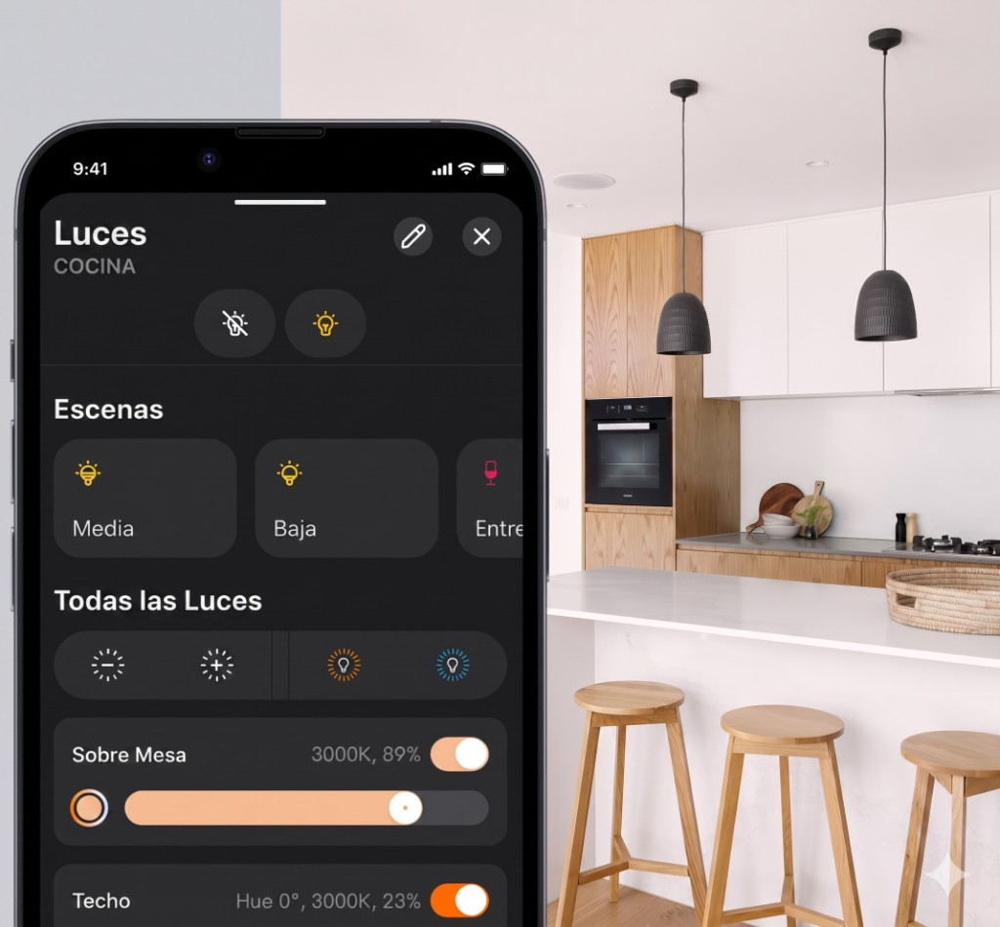
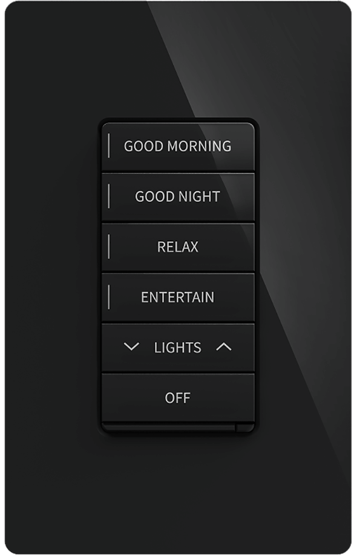

Crestron Home® — Iluminación
Crestron Home® — Iluminación

Con Crestron Home Lighting, la iluminación deja de ser solo encender y apagar. Podés activar escenas para recibir gente, bajar intensidad para una cena, dar más claridad al arrancar el día o apagar toda la casa con un solo gesto.
Todo se gestiona desde una única experiencia: keypad, app, pantalla táctil o automatización. La compatibilidad se define según el proyecto y tipo de luminaria para asegurar un resultado realmente sólido.
La propuesta es simple: una casa que responde mejor, se ve mejor y requiere menos esfuerzo. La tecnología queda en segundo plano; vos solo disfrutás ambientes bien resueltos en cada momento.
Ver keypads Horizon y Cameo →¿Por qué elegir iluminación Crestron Home?
Un toque transforma varias luces a la vez: de día a cena, de cine a noche, con una transición natural y coherente.
Programá eventos por hora exacta, amanecer o atardecer para que la luz acompañe tu rutina sin pedirte atención constante.
No es solo prender o apagar. Ajustá intensidad por ambiente para lograr la luz justa en cada momento.
Cada área puede tener su propia lógica sin perder una visión global de la casa: cocina, living, pasillos o suite principal.
La misma experiencia funciona desde keypads, app, pantallas táctiles y automatizaciones programadas.
En configuraciones compatibles, podés ajustar intensidad y temperatura de color para acompañar mañana, tarde y noche.
Ambiente
Creá el clima para una cena, una noche de películas en casa o la luz ideal para una videollamada de trabajo: un solo gesto y el ambiente cambia.
La luz te acompaña cuando entrás a un espacio y se apaga sola poco después de irte. Al final del día, tocá “Buenas noches” desde la cama y todo baja el ritmo junto con las persianas.
Keypads Crestron Home
Dos familias de keypads y dimmers para la misma plataforma. Tocá cada imagen para ver ficha, comparativa y —en Horizon®— el configurador de acabados y grabados.

Nueva generación: materiales premium, retroiluminación RGB y configurador de acabados en la subpágina.

Lenguaje arquitectónico sobrio y control completo desde la pared. La ficha detallada y media se amplían próximamente.
Escenarios cotidianos que mejoran la experiencia
Al atardecer, una escena puede encender recibidor, cocina y circulación con niveles suaves para una bienvenida natural.
El comedor baja intensidad mientras cocina y apoyo perimetral mantienen la luz funcional donde todavía hay movimiento.
Una Quick Action combina iluminación, persianas y entretenimiento para lograr ambiente con un solo toque.
Un botón puede lanzar “All Off” o bajar luz progresivamente para cerrar el día con comodidad.
Con sensores compatibles, la respuesta de luz se adapta al horario para evitar deslumbramiento durante la madrugada.
Eventos programados por hora exacta, amanecer o atardecer reducen tareas repetitivas y sostienen una casa ordenada.
La app Crestron Home está disponible en iOS y Android. Algunas integraciones y compatibilidades dependen de la región y del proyecto.